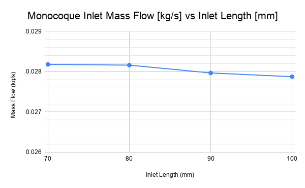
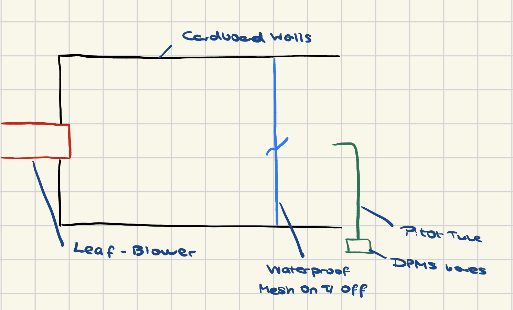
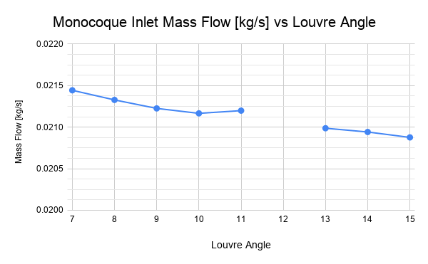
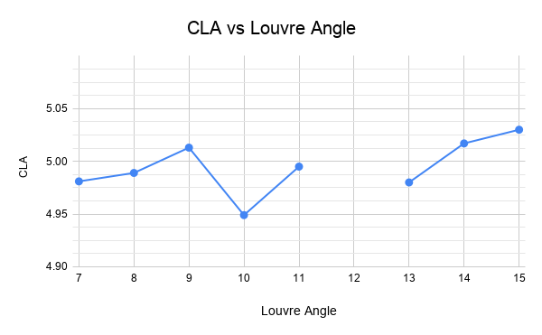
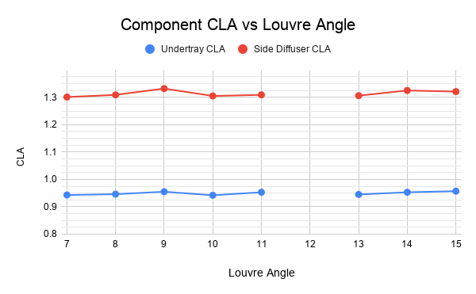

Accumulator Cooling: Ducting Design and CFD


Why are we cooling?
The M26 accumulator for the 2026 Monash Motorsport car is a 120s1p, 6.38 kWh air-cooled pack. The problem is that the cooling configuration presented in January has poor flow management and no consideration of airflow at the vehicle level. My solution for the project aims to develop a more vehicle-flow-focused cooling system, reducing the overall accumulator temperatures without impacting the overall vehicle-flow and integration.
Cooling exists so the pack is able to run a full endurance duty cycle at a reduced capacity. PACSIM simulations showed a 4.8 kWh pack is able to match the endurance performance of a 9.4kg heavier uncooled pack. Following 2026 points sensitivities, it was estimated that a reduction in mass by 9.4 kg provided a competition points gain of 20.57, a high sensitivity parameter vital for overall car performance.
Developing the Ducting
Airflow has to be brought into the accumulator from somewhere, and through preliminary simulations, the ducting was competing for air volume from the side diffuser and undertray, which are aerodynamically very costly parts. The side diffuser CLA dropped from 1.369 to 0.963, and the undertray dropped from 0.980 to 0.686, compared with a regular sealed duct reference case.
Following more targeted design iterations, a “sidepod” esque external duct was investigated, inspired by the ground-effect era Formula 1 cars. This proved to be a vital stepping stone in solving the CLA drop, pushing it to an overall 5.174, from a costly 4.406 in the sealed duct case. The aerodynamic balance of the car also shifted from 51.1% to 50%, an overall benefit there as well. The sidepod also contains angled louvres towards the bottom, providing a water ingress concern solution.
Investigating the external ducts, studies were done on the positioning of the inlet hole, inlet hole and other performance enhancers. Investigating the overall inlet positioning in the x direction was a key factor in maximising the flow into and through the accumulator.

Another concern, brought up during design reviews was water ingress into the accumulator. To account for this 2 options were looked into, a waterproof mesh and louvres. Physically speaking if there was no airflow impact the waterproof mesh was the most viable option. Ordering a waterproof mesh and conducting some tests in an wind-tunnel esque set-up below showed to block approximately 85-90% of the airflow, proving the mesh to be infeasible.

The louvres were looked at from then onwards at the bottom of the sidepod design. Taking 3 louvres with dimensions 50mm x 100mm. Provided the best water pathway per preliminary testing. During investigation of the louvres, a sweep of various angles with reference to the original positioning was conducted, unfortunately during the sweep the 12 degree angled louvre failed during the mesh process. However the following results were gathered. Noting the results as the louvre angle increased the mass flow into the monocoque did decrease, however very minimally. On the opposite end the CLA did increase through air leaking onto the side diffuser and consequently into the undertray. Taking both factors into consideration the CLA benefit overrode the overall mass flow deficit due to it being so small and thus a louvre angle of 15 degrees.



Vortex generators were a final late addition onto the external ducts, for 2 reasons generating high energy vortices to reduce air flow separation in the ducts, since water being more dense than air pushing the air upwards while the water would leak down through the louvres with gravity.
In parallel with these external ducts, internal ducting from the monocoque to the accumulator and from the accumulator outletting through the rear bulkhead were developed. In tandem with the external ducts, the key indicators of a good design were maximising the mass flow of air entering the accumulator and the overall uniformity of the velocity. Why? The mass flow is a key indicator of the volume of air being pushed through; the higher the mass flow, the greater the heat rejection available, bounded by what the fan can deliver. The uniformity is a scale from 0-1 showing how the velocity varies over a surface, with a value of 1 indicating perfectly uniform velocity over a surface, with lower values increasing the variation in velocity, using an area-weighted uniformity. By comparing these 2 metrics from the monocoque internal hole to the entrance of the accumulator, we were able to identify how the changes in ducting design impacted the hypothesised cooling performance.
The design of the internal ducting had a reverse ducting system due to the entrance of the accumulator being further forward than the monocoque internal wall. To account for any energy losses in the air that might occur, an investigation into turning vanes was conducted, improving the overall airflow uniformity and mass flow of the air entering the accumulator.
CFD Simulation Set-Up
The CFD simulation was conducted using a half-car symmetry model, taking into account ground effect and rotating wheels. The cooling pipeline, in particular, treated the accumulator as a container with segments split into the cell tabs and overall cells. The monocoque was hollowed out to account for any internal flow that may occur while unlikely in a sealed ducting system. A pressure-jump fan boundary condition was applied to the radiator and rear bulkhead fans, with a realizable k-epsilon with enhanced wall treatment turbulence model being used. Convergence was driven via report monitors on CLA & CDA, using PRESTO! for pressure interpolation, pseudo-transient continuation, and a velocity inlet specified by 5% intensity and a viscosity ratio of 10.
The final mesh contained 35.5M cells, with a skewness of 5.54E-11 and an orthogonal quality of 0.94. During the course of the campaign, multiple mesh debugs were taken into consideration through various self-intersection methods when defining fans and ensuring interior zones were properly defined to solve the fans.
Summary of Project
Over the course of the project, 94 design runs were completed, averaging approximately 5 hours per run. The mass flow rate through the accumulator was recorded at 0.021 kg/s, a massive improvement over the previously presented 0.008 kg/s, and a velocity uniformity of 0.943. Furthermore, the CLA had increased by 0.768, with the centre of pressure of the car moving from 48.8% to 50% from initial cooling runs. Current work focuses on manufacturing the ducts and finalising the thermal values, a direct measure of the work.
Scope: the thermal resistance modelling and cooling-method trade study (cell body vs tab vs PCM) were produced by teammates in the electrical powertrain group, and the mesh independence study by a peer. My contribution was the duct design, the CFD setup and boundary conditions, and the meshing and solver debugging.